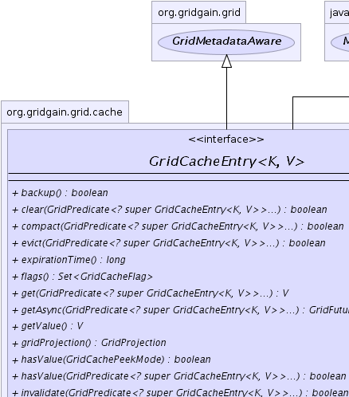
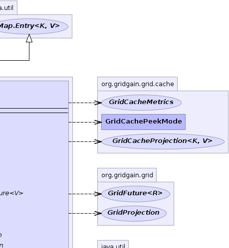
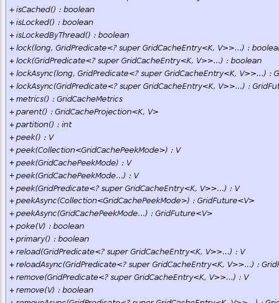
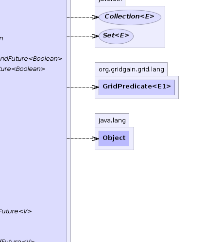
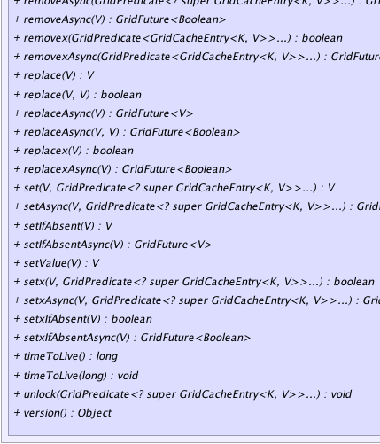
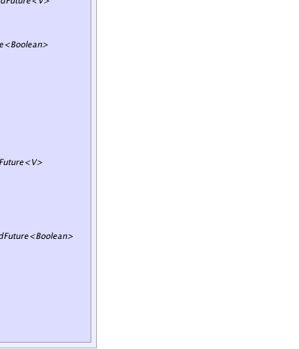

|
|

|

|
|

|

|

|
GridGain™ 4.0.1c
Community Edition |
|||||||||
| PREV CLASS NEXT CLASS | FRAMES NO FRAMES | |||||||||
| SUMMARY: NESTED | FIELD | CONSTR | METHOD | DETAIL: FIELD | CONSTR | METHOD | |||||||||
K - Key type.V - Value type.public interface GridCacheEntry<K,V>
This interface provides a rich API for working with individual cache entries. It includes the following main functionality:
'get(..)' methods to synchronously or asynchronously get values from cache.
All 'get(..)' methods are transactional and will participate in an ongoing transaction
if there is one.
'set(..)', 'setIfAbsent(..)', and 'replace(..)' methods to
synchronously or asynchronously put single or multiple entries into cache.
All these methods are transactional and will participate in an ongoing transaction
if there is one.
'remove(..)' methods to synchronously or asynchronously remove single or multiple keys
from cache. All 'remove(..)' methods are transactional and will participate in an ongoing transaction
if there is one.
'invalidate(..)' methods to set cached values to null.
'isLocked(..)' methods to check on distributed locks on a single or multiple keys
in cache. All locking methods are not transactional and will not enlist keys into ongoing transaction,
if any.
'peek(..)' methods to peek at values in global or transactional memory, swap
storage, or persistent storage.
'reload(..)' methods to reload latest values from persistent storage.
GridCacheEntry.evict(GridPredicate[]) to evict elements from cache, and optionally store
them in underlying swap storage for later access. All 'evict(..)' methods are not
transactional and will not enlist evicted keys into ongoing transaction, if any.
GridCacheEntry.timeToLive(long) to change or lookup entry's time to live.
'x' provide the same functionality as their sibling
methods that don't end with 'x', however instead of returning a previous value they
return a boolean flag indicating whether operation succeeded or not. Returning
a previous value may involve a network trip or a persistent store lookup and should be
avoided whenever not needed.
'get(..)', 'put(..)', 'replace(..)',
and 'remove(..)' operations are transactional and will participate in an ongoing transaction,
if any. Other methods like 'peek(..)' may
be transaction-aware, i.e. check in-transaction entries first, but will not affect the current
state of transaction. See GridCacheTx documentation for more information
about transactions.
null keys or values are allowed to be stored in cache. If a null value
happens to be in cache (e.g. after invalidation or remove), then cache will treat this case
as there is no value at all.
All API method with @Nullable annotation on method parameters
or return values either accept or may return a null value. Parameters that do not
have this annotation cannot be null and invoking method with a null parameter
in this case will result in NullPointerException.
| Wiki | |
| Forum |
|  |  |
|  |  |
|  |  |
| Method Summary | |
|---|---|
boolean |
backup()
Gets the flag indicating if current node is backup for this entry. |
boolean |
clear(GridPredicate<? super GridCacheEntry<K,V>>... filter)
This method has the same semantic as GridCacheProjection.clear(Object, GridPredicate[]) method. |
boolean |
compact(GridPredicate<? super GridCacheEntry<K,V>>... filter)
Optimizes the size of this entry. |
boolean |
evict(GridPredicate<? super GridCacheEntry<K,V>>... filter)
This method has the same semantic as GridCacheProjection.evict(Object, GridPredicate[]) method. |
long |
expirationTime()
Gets expiration time for this entry. |
Set<GridCacheFlag> |
flags()
|
V |
get(GridPredicate<? super GridCacheEntry<K,V>>... filter)
This method has the same semantic as GridCacheProjection.get(Object, GridPredicate[]) method. |
GridFuture<V> |
getAsync(GridPredicate<? super GridCacheEntry<K,V>>... filter)
This method has the same semantic as GridCacheProjection.getAsync(Object, GridPredicate[]) method. |
V |
getValue()
This method has the same semantic as GridCacheEntry.get(GridPredicate[]) method, however it
wraps GridException into GridRuntimeException if failed in order to
comply with Map.Entry interface. |
GridProjection |
gridProjection()
Gets parent grid projection for this entry. |
boolean |
hasValue(GridCachePeekMode mode)
Check if cache has value for the entry. |
boolean |
hasValue(GridPredicate<? super GridCacheEntry<K,V>>... filter)
Transaction-aware check if cache has in-memory cached value. |
boolean |
invalidate(GridPredicate<? super GridCacheEntry<K,V>>... filter)
This method has the same semantic as GridCacheProjection.invalidate(Object, GridPredicate[]) method. |
boolean |
isCached()
Checks whether entry is currently present in cache or not. |
boolean |
isLocked()
This method has the same semantic as GridCacheProjection.isLocked(Object) method. |
boolean |
isLockedByThread()
This method has the same semantic as GridCacheProjection.isLockedByThread(Object) method. |
boolean |
lock(GridPredicate<? super GridCacheEntry<K,V>>... filter)
Synchronously acquires lock on a cached object associated with this entry only if the passed in filter (if any) passes. |
boolean |
lock(long timeout,
GridPredicate<? super GridCacheEntry<K,V>>... filter)
Synchronously acquires lock on a cached object associated with this entry only if the passed in filter (if any) passes. |
GridFuture<Boolean> |
lockAsync(GridPredicate<? super GridCacheEntry<K,V>>... filter)
Asynchronously acquires lock on a cached object associated with this entry only if the passed in filter (if any) passes. |
GridFuture<Boolean> |
lockAsync(long timeout,
GridPredicate<? super GridCacheEntry<K,V>>... filter)
Asynchronously acquires lock on a cached object associated with this entry only if the passed in filter (if any) passes. |
GridCacheMetrics |
metrics()
Metrics containing various statistics about this entry. |
GridCacheProjection<K,V> |
parent()
Cache projection to which this entry belongs. |
int |
partition()
Gets affinity partition id for this entry. |
V |
peek()
This method has the same semantic as GridCacheProjection.peek(Object) method. |
V |
peek(Collection<GridCachePeekMode> modes)
This method has the same semantic as GridCacheProjection.peek(Object, Collection) method. |
V |
peek(GridCachePeekMode... modes)
This method has the same semantic as GridCacheProjection.peek(Object, GridCachePeekMode...) method. |
V |
peek(GridCachePeekMode mode)
This method has the same semantic as GridCacheProjection.peek(Object, GridCachePeekMode...) method. |
V |
peek(GridPredicate<? super GridCacheEntry<K,V>>... filter)
This method has the same semantic as GridCacheProjection.peek(Object, GridPredicate[]) method. |
GridFuture<V> |
peekAsync(Collection<GridCachePeekMode> modes)
This method has the same semantic as GridCacheProjection.peekAsync(Object, Collection) method. |
GridFuture<V> |
peekAsync(GridCachePeekMode... modes)
This method has the same semantic as GridCacheProjection.peekAsync(Object, GridCachePeekMode...) |
boolean |
poke(V val)
This method overwrites current in-memory value with new value. |
boolean |
primary()
Gets the flag indicating current node's primary ownership for this entry. |
V |
reload(GridPredicate<? super GridCacheEntry<K,V>>... filter)
This method has the same semantic as GridCacheProjection.reload(Object, GridPredicate[]) method. |
GridFuture<V> |
reloadAsync(GridPredicate<? super GridCacheEntry<K,V>>... filter)
This method has the same semantic as GridCacheProjection.reloadAsync(Object, GridPredicate[]) method. |
V |
remove(GridPredicate<? super GridCacheEntry<K,V>>... filter)
This method has the same semantic as GridCacheProjection.remove(Object, GridPredicate[]) method. |
boolean |
remove(V val)
This method has the same semantic as GridCacheProjection.remove(Object, Object) method. |
GridFuture<V> |
removeAsync(GridPredicate<? super GridCacheEntry<K,V>>... filter)
This method has the same semantic as GridCacheProjection.removeAsync(Object, GridPredicate[]) method. |
GridFuture<Boolean> |
removeAsync(V val)
This method has the same semantic as GridCacheProjection.removeAsync(Object, Object) method. |
boolean |
removex(GridPredicate<GridCacheEntry<K,V>>... filter)
This method has the same semantic as GridCacheProjection.removex(Object, GridPredicate[]) method. |
GridFuture<Boolean> |
removexAsync(GridPredicate<GridCacheEntry<K,V>>... filter)
This method has the same semantic as GridCacheProjection.removexAsync(Object, GridPredicate[]) method. |
V |
replace(V val)
This method has the same semantic as GridCacheProjection.replace(Object, Object) method. |
boolean |
replace(V oldVal,
V newVal)
This method has the same semantic as GridCacheProjection.replace(Object, Object, Object) method. |
GridFuture<V> |
replaceAsync(V val)
This method has the same semantic as GridCacheProjection.replaceAsync(Object, Object) method. |
GridFuture<Boolean> |
replaceAsync(V oldVal,
V newVal)
This method has the same semantic as GridCacheProjection.replaceAsync(Object, Object, Object) method. |
boolean |
replacex(V val)
This method has the same semantic as GridCacheProjection.replacex(Object, Object) method. |
GridFuture<Boolean> |
replacexAsync(V val)
This method has the same semantic as GridCacheProjection.replacexAsync(Object, Object) method. |
V |
set(V val,
GridPredicate<? super GridCacheEntry<K,V>>... filter)
This method has the same semantic as GridCacheProjection.put(Object, Object, GridPredicate[]) method. |
GridFuture<V> |
setAsync(V val,
GridPredicate<? super GridCacheEntry<K,V>>... filter)
This method has the same semantic as GridCacheProjection.putAsync(Object, Object, GridPredicate[]) method. |
V |
setIfAbsent(V val)
This method has the same semantic as GridCacheProjection.putIfAbsent(Object, Object) method. |
GridFuture<V> |
setIfAbsentAsync(V val)
This method has the same semantic as GridCacheProjection.putIfAbsentAsync(Object, Object) method. |
V |
setValue(V val)
This method has the same semantic as GridCacheEntry.set(Object, GridPredicate[]) method, however it
wraps GridException into GridRuntimeException if failed in order to
comply with Map.Entry interface. |
boolean |
setx(V val,
GridPredicate<? super GridCacheEntry<K,V>>... filter)
This method has the same semantic as GridCacheProjection.putx(Object, Object, GridPredicate[]) method. |
GridFuture<Boolean> |
setxAsync(V val,
GridPredicate<? super GridCacheEntry<K,V>>... filter)
This method has the same semantic as GridCacheProjection.putxAsync(Object, Object, GridPredicate[]) method. |
boolean |
setxIfAbsent(V val)
This method has the same semantic as GridCacheProjection.putxIfAbsent(Object, Object) method. |
GridFuture<Boolean> |
setxIfAbsentAsync(V val)
This method has the same semantic as GridCacheProjection.putxIfAbsentAsync(Object, Object) method. |
long |
timeToLive()
Gets time to live, i.e. maximum life time, of this entry in milliseconds. |
void |
timeToLive(long ttl)
Sets time to live, i.e. maximum life time, of this entry in milliseconds. |
void |
unlock(GridPredicate<? super GridCacheEntry<K,V>>... filter)
Unlocks this entry only if current thread owns the lock. |
Object |
version()
Gets current version of this cache entry. |
| Methods inherited from interface java.util.Map.Entry |
|---|
equals, getKey, hashCode |
| Methods inherited from interface org.gridgain.grid.GridMetadataAware |
|---|
addMeta, addMetaIfAbsent, addMetaIfAbsent, allMeta, copyMeta, copyMeta, hasMeta, hasMeta, meta, putMetaIfAbsent, putMetaIfAbsent, removeMeta, removeMeta, replaceMeta |
| Method Detail |
|---|
Set<GridCacheFlag> flags()
GridCacheProjection<K,V> parent()
boolean hasValue(@Nullable
GridPredicate<? super GridCacheEntry<K,V>>... filter)
SMART peek mode
and is equivalent to 'hasValue(SMART)' or 'peek(SMART) != null'
expression.
This method will not attempt to load entry from any persistent store or remote node.
filter - Filter that needs to pass prior to returning the value. Note that
checking filter and returning value will be done as one atomic operation.
boolean hasValue(@Nullable
GridCachePeekMode mode)
throws GridException
'peek(mode, filter) != null' expression.
Note that if mode is not provided (null) then
SMART mode is used by default.
GridException - If peek operation, such as swap or database read, failed.mode - Peek mode.
See GridCacheProjection.peek(Object, GridCachePeekMode...).
True if filter passed and entry has a value either within transaction or
globally, depending on 'tx' parameter.@Nullable V peek()
GridCacheProjection.peek(Object) method.
GridCacheProjection.peek(Object).
boolean poke(V val)
throws GridException
Note that this method is non-transactional and non-distributed and should almost never be used. It is meant to be used when fixing some heuristic error state.
GridException - If poke operation failed.val - Value to set.
True if poke operation succeeded, false if entry was not
in cache.
@Nullable
V peek(@Nullable
GridPredicate<? super GridCacheEntry<K,V>>... filter)
GridCacheProjection.peek(Object, GridPredicate[]) method.
filter - See GridCacheProjection.peek(Object).
GridCacheProjection.peek(Object).
@Nullable
V peek(@Nullable
GridCachePeekMode mode)
throws GridException
GridCacheProjection.peek(Object, GridCachePeekMode...) method.
GridException - See GridCacheProjection.peek(Object, GridCachePeekMode...).mode - See GridCacheProjection.peek(Object, GridCachePeekMode...).
GridCacheProjection.peek(Object, GridCachePeekMode...).
@Nullable
V peek(@Nullable
GridCachePeekMode... modes)
throws GridException
GridCacheProjection.peek(Object, GridCachePeekMode...) method.
GridException - See GridCacheProjection.peek(Object, GridCachePeekMode...).modes - See GridCacheProjection.peek(Object, GridCachePeekMode...).
GridCacheProjection.peek(Object, GridCachePeekMode...).
@Nullable
V peek(@Nullable
Collection<GridCachePeekMode> modes)
throws GridException
GridCacheProjection.peek(Object, Collection) method.
GridException - See GridCacheProjection.peek(Object, GridCachePeekMode...).modes - See GridCacheProjection.peek(Object, GridCachePeekMode...).
GridCacheProjection.peek(Object, GridCachePeekMode...).@Nullable GridFuture<V> peekAsync(@Nullable GridCachePeekMode... modes)
GridCacheProjection.peekAsync(Object, GridCachePeekMode...)
method.
modes - See GridCacheProjection.peekAsync(Object, GridCachePeekMode...).
GridCacheProjection.peekAsync(Object, GridCachePeekMode...).@Nullable GridFuture<V> peekAsync(@Nullable Collection<GridCachePeekMode> modes)
GridCacheProjection.peekAsync(Object, Collection) method.
modes - See GridCacheProjection.peekAsync(Object, GridCachePeekMode...).
GridCacheProjection.peekAsync(Object, GridCachePeekMode...).@Nullable V reload(GridPredicate<? super GridCacheEntry<K,V>>... filter) throws GridException
GridCacheProjection.reload(Object, GridPredicate[]) method.
GridException - See GridCacheProjection.reload(Object, GridPredicate[]).filter - See GridCacheProjection.reload(Object, GridPredicate[]).
GridCacheProjection.reload(Object, GridPredicate[]).GridFuture<V> reloadAsync(GridPredicate<? super GridCacheEntry<K,V>>... filter)
GridCacheProjection.reloadAsync(Object, GridPredicate[]) method.
filter - See GridCacheProjection.reloadAsync(Object, GridPredicate[]).
GridCacheProjection.reloadAsync(Object, GridPredicate[]).boolean isLocked()
GridCacheProjection.isLocked(Object) method.
GridCacheProjection.isLocked(Object).boolean isLockedByThread()
GridCacheProjection.isLockedByThread(Object) method.
GridCacheProjection.isLockedByThread(Object).Object version()
long expirationTime()
long timeToLive()
void timeToLive(long ttl)
ttl - Time to live value for this entry.GridCacheMetrics metrics()
boolean primary()
Note, that this value is dynamic and may change with grid topology changes.
True if current grid node is the primary owner for this entry.boolean backup()
Note, that this value is dynamic and may change with grid topology changes.
True if current grid node is the backup for this entry.int partition()
GridProjection gridProjection()
GridCacheProjection@Nullable V getValue()
GridCacheEntry.get(GridPredicate[]) method, however it
wraps GridException into GridRuntimeException if failed in order to
comply with Map.Entry interface.
getValue in interface Map.Entry<K,V>GridCacheEntry.get(GridPredicate[])
@Nullable
V get(@Nullable
GridPredicate<? super GridCacheEntry<K,V>>... filter)
throws GridException
GridCacheProjection.get(Object, GridPredicate[]) method.
GridException - See GridCacheProjection.get(Object, GridPredicate[]).filter - See GridCacheProjection.get(Object, GridPredicate[]).
GridCacheProjection.get(Object, GridPredicate[]).GridFuture<V> getAsync(@Nullable GridPredicate<? super GridCacheEntry<K,V>>... filter)
GridCacheProjection.getAsync(Object, GridPredicate[]) method.
filter - See GridCacheProjection.getAsync(Object, GridPredicate[]).
GridCacheProjection.getAsync(Object, GridPredicate[]).@Nullable V setValue(V val)
GridCacheEntry.set(Object, GridPredicate[]) method, however it
wraps GridException into GridRuntimeException if failed in order to
comply with Map.Entry interface.
setValue in interface Map.Entry<K,V>GridCacheEntry.set(Object, GridPredicate[])
@Nullable
V set(V val,
@Nullable
GridPredicate<? super GridCacheEntry<K,V>>... filter)
throws GridException
GridCacheProjection.put(Object, Object, GridPredicate[]) method.
GridException - See GridCacheProjection.put(Object, Object, GridPredicate[]).val - See GridCacheProjection.put(Object, Object, GridPredicate[])filter - See GridCacheProjection.put(Object, Object, GridPredicate[]).
GridCacheProjection.put(Object, Object, GridPredicate[]).GridFuture<V> setAsync(V val, @Nullable GridPredicate<? super GridCacheEntry<K,V>>... filter)
GridCacheProjection.putAsync(Object, Object, GridPredicate[]) method.
val - See GridCacheProjection.putAsync(Object, Object, GridPredicate[])filter - See GridCacheProjection.putAsync(Object, Object, GridPredicate[]).
GridCacheProjection.putAsync(Object, Object, GridPredicate[]).
@Nullable
V setIfAbsent(V val)
throws GridException
GridCacheProjection.putIfAbsent(Object, Object) method.
GridException - See GridCacheProjection.putIfAbsent(Object, Object).val - See GridCacheProjection.putIfAbsent(Object, Object)
GridCacheProjection.putIfAbsent(Object, Object).GridFuture<V> setIfAbsentAsync(V val)
GridCacheProjection.putIfAbsentAsync(Object, Object) method.
val - See GridCacheProjection.putIfAbsentAsync(Object, Object)
GridCacheProjection.putIfAbsentAsync(Object, Object).
boolean setx(V val,
@Nullable
GridPredicate<? super GridCacheEntry<K,V>>... filter)
throws GridException
GridCacheProjection.putx(Object, Object, GridPredicate[]) method.
GridException - See GridCacheProjection.putx(Object, Object, GridPredicate[]).val - See GridCacheProjection.putx(Object, Object, GridPredicate[])filter - See GridCacheProjection.putx(Object, Object, GridPredicate[]).
GridCacheProjection.putx(Object, Object, GridPredicate[]).GridFuture<Boolean> setxAsync(V val, @Nullable GridPredicate<? super GridCacheEntry<K,V>>... filter)
GridCacheProjection.putxAsync(Object, Object, GridPredicate[]) method.
val - See GridCacheProjection.putxAsync(Object, Object, GridPredicate[])filter - See GridCacheProjection.putxAsync(Object, Object, GridPredicate[]).
GridCacheProjection.putxAsync(Object, Object, GridPredicate[]).
boolean setxIfAbsent(@Nullable
V val)
throws GridException
GridCacheProjection.putxIfAbsent(Object, Object) method.
GridException - See GridCacheProjection.putxIfAbsent(Object, Object).val - See GridCacheProjection.putxIfAbsent(Object, Object)
GridCacheProjection.putxIfAbsent(Object, Object).GridFuture<Boolean> setxIfAbsentAsync(V val)
GridCacheProjection.putxIfAbsentAsync(Object, Object) method.
val - See GridCacheProjection.putxIfAbsentAsync(Object, Object)
GridCacheProjection.putxIfAbsentAsync(Object, Object).
@Nullable
V replace(V val)
throws GridException
GridCacheProjection.replace(Object, Object) method.
GridException - See GridCacheProjection.replace(Object, Object).val - See GridCacheProjection.replace(Object, Object)
GridCacheProjection.replace(Object, Object).GridFuture<V> replaceAsync(V val)
GridCacheProjection.replaceAsync(Object, Object) method.
val - See GridCacheProjection.replaceAsync(Object, Object)
GridCacheProjection.replaceAsync(Object, Object).
boolean replacex(V val)
throws GridException
GridCacheProjection.replacex(Object, Object) method.
GridException - See GridCacheProjection.replacex(Object, Object).val - See GridCacheProjection.replacex(Object, Object)
GridCacheProjection.replacex(Object, Object).GridFuture<Boolean> replacexAsync(V val)
GridCacheProjection.replacexAsync(Object, Object) method.
val - See GridCacheProjection.replacexAsync(Object, Object)
GridCacheProjection.replacexAsync(Object, Object).
boolean replace(V oldVal,
V newVal)
throws GridException
GridCacheProjection.replace(Object, Object, Object) method.
GridException - See GridCacheProjection.replace(Object, Object).oldVal - See GridCacheProjection.replace(Object, Object, Object)newVal - See GridCacheProjection.replace(Object, Object, Object)
GridCacheProjection.replace(Object, Object).GridFuture<Boolean> replaceAsync(V oldVal, V newVal)
GridCacheProjection.replaceAsync(Object, Object, Object) method.
oldVal - See GridCacheProjection.replaceAsync(Object, Object, Object)newVal - See GridCacheProjection.replaceAsync(Object, Object, Object)
GridCacheProjection.replaceAsync(Object, Object).
@Nullable
V remove(@Nullable
GridPredicate<? super GridCacheEntry<K,V>>... filter)
throws GridException
GridCacheProjection.remove(Object, GridPredicate[]) method.
GridException - See GridCacheProjection.remove(Object, GridPredicate[]).filter - See GridCacheProjection.remove(Object, GridPredicate[]).
GridCacheProjection.remove(Object, GridPredicate[]).GridFuture<V> removeAsync(@Nullable GridPredicate<? super GridCacheEntry<K,V>>... filter)
GridCacheProjection.removeAsync(Object, GridPredicate[]) method.
filter - See GridCacheProjection.removeAsync(Object, GridPredicate[]).
GridCacheProjection.removeAsync(Object, GridPredicate[]).
boolean removex(@Nullable
GridPredicate<GridCacheEntry<K,V>>... filter)
throws GridException
GridCacheProjection.removex(Object, GridPredicate[]) method.
GridException - See GridCacheProjection.removex(Object, GridPredicate[]).filter - See GridCacheProjection.removex(Object, GridPredicate[]).
GridCacheProjection.removex(Object, GridPredicate[]).GridFuture<Boolean> removexAsync(@Nullable GridPredicate<GridCacheEntry<K,V>>... filter)
GridCacheProjection.removexAsync(Object, GridPredicate[]) method.
filter - See GridCacheProjection.removexAsync(Object, GridPredicate[]).
GridCacheProjection.removexAsync(Object, GridPredicate[]).
boolean remove(V val)
throws GridException
GridCacheProjection.remove(Object, Object) method.
GridException - See GridCacheProjection.remove(Object, Object).val - See GridCacheProjection.remove(Object, Object).
GridCacheProjection.remove(Object, Object).GridFuture<Boolean> removeAsync(V val)
GridCacheProjection.removeAsync(Object, Object) method.
val - See GridCacheProjection.removeAsync(Object, Object).
GridCacheProjection.removeAsync(Object, Object).
boolean evict(@Nullable
GridPredicate<? super GridCacheEntry<K,V>>... filter)
GridCacheProjection.evict(Object, GridPredicate[]) method.
filter - Optional filter.
GridCacheProjection.evict(Object, GridPredicate[]).
boolean clear(@Nullable
GridPredicate<? super GridCacheEntry<K,V>>... filter)
GridCacheProjection.clear(Object, GridPredicate[]) method.
filter - Optional filter that entry should pass before
it will be cleared from cache.
GridCacheProjection.clear(Object, GridPredicate[]).
boolean invalidate(@Nullable
GridPredicate<? super GridCacheEntry<K,V>>... filter)
throws GridException
GridCacheProjection.invalidate(Object, GridPredicate[]) method.
GridException - See GridCacheProjection.invalidate(Object, GridPredicate[]).filter - See GridCacheProjection.invalidate(Object, GridPredicate[]).
GridCacheProjection.invalidate(Object, GridPredicate[]).
boolean compact(@Nullable
GridPredicate<? super GridCacheEntry<K,V>>... filter)
throws GridException
null at the time
of the call then entry is removed locally.
GridException - If failed to compact.filter - Optional filter that entry should pass prior to optimization.
true if entry was cleared from cache (if value was null).
boolean lock(@Nullable
GridPredicate<? super GridCacheEntry<K,V>>... filter)
throws GridException
GridCacheTxConcurrency.PESSIMISTIC concurrency control for transaction
which will acquire explicit locks for relevant cache operations.
GridCacheFlag.LOCAL, GridCacheFlag.READ.
GridException - If lock acquisition resulted in error.
GridCacheFlagException - If flags validation failed.filter - Optional filter to validate prior to acquiring the lock.
True if all filters passed and lock was acquired,
false otherwise.GridFuture<Boolean> lockAsync(@Nullable GridPredicate<? super GridCacheEntry<K,V>>... filter)
GridCacheTxConcurrency.PESSIMISTIC concurrency control for transaction
which will acquire explicit locks for relevant cache operations.
GridCacheFlag.LOCAL, GridCacheFlag.READ.
GridCacheFlagException - If flags validation failed.filter - Optional filter to validate prior to acquiring the lock.
true
whenever lock was successfully acquired, false otherwise.
boolean lock(long timeout,
@Nullable
GridPredicate<? super GridCacheEntry<K,V>>... filter)
throws GridException
GridCacheTxConcurrency.PESSIMISTIC concurrency control for transaction
which will acquire explicit locks for relevant cache operations.
GridCacheFlag.LOCAL, GridCacheFlag.READ.
GridException - If lock acquisition resulted in error.
GridCacheFlagException - If flags validation failed.timeout - Timeout in milliseconds to wait for lock to be acquired
('0' for no expiration).filter - Optional filter to validate prior to acquiring the lock.
True if all filters passed and lock was acquired,
false otherwise.GridFuture<Boolean> lockAsync(long timeout, @Nullable GridPredicate<? super GridCacheEntry<K,V>>... filter)
GridCacheTxConcurrency.PESSIMISTIC concurrency control for transaction
which will acquire explicit locks for relevant cache operations.
GridCacheFlag.LOCAL, GridCacheFlag.READ.
GridCacheFlagException - If flags validation failed.timeout - Timeout in milliseconds to wait for lock to be acquired
('0' for no expiration).filter - Optional filter to validate prior to acquiring the lock.
true
whenever all filters pass and locks are acquired before timeout is expired,
false otherwise.void unlock(GridPredicate<? super GridCacheEntry<K,V>>... filter) throws GridException
GridCacheTxConcurrency.PESSIMISTIC concurrency control for transaction
which will acquire explicit locks for relevant cache operations.
GridCacheFlag.LOCAL, GridCacheFlag.READ.
GridException - If unlock execution resulted in error.
GridCacheFlagException - If flags validation failed.filter - Optional filter that needs to pass prior to unlock taking effect.boolean isCached()
false is returned. In this case all
operations on this entry will cause creation of a new entry in cache.
True if entry is in cache, false otherwise.
|
GridGain™ 4.0.1c
Community Edition |
|||||||||
| PREV CLASS NEXT CLASS | FRAMES NO FRAMES | |||||||||
| SUMMARY: NESTED | FIELD | CONSTR | METHOD | DETAIL: FIELD | CONSTR | METHOD | |||||||||
|
GridGain - Real Time Big Data
|
|
|
|